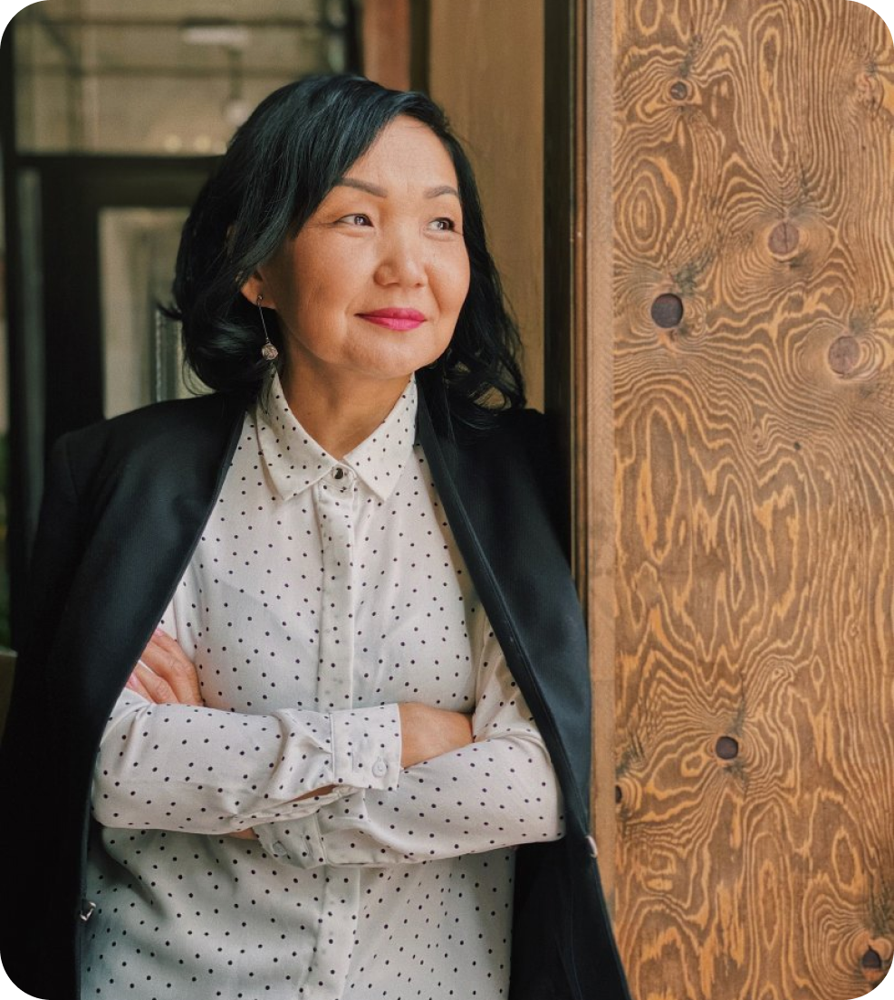
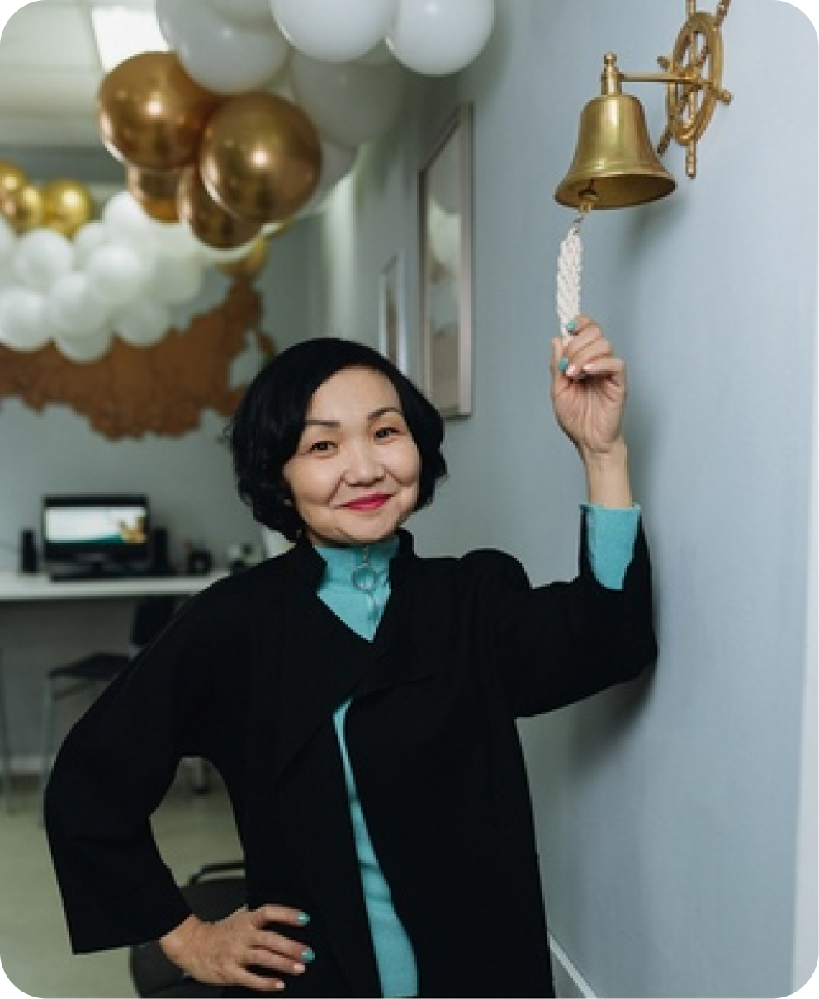

Обо мне
На самом деле, я не отношусь к той категории людей, которые мечтали быть учителями с детства. Но о том, что стала учителем, ни капли не жалею. Моим самым главным учителем с рождения и по сей день можно по праву назвать мою любимую маму, учителя математики Оронгойской средней школы им.Н.Балдано, посвятившей 46 лет своей педагогической деятельности, отличника народного просвещения РСФСР, старшего учителя, заслуженного учителя РФ и РБ Ханду Гомбоевну Юмову. Также на пути становления человеком огромное значение сыграли в моей жизни мой первый учитель - это Бураева Мария Григорьевна и самый любимый учитель русского языка и литературы Сергеева Нина Никифоровна
«Не важно, с какой скоростью ты
движешься к своей цели, главное — не
останавливаться»
Конфуций
Я после окончания БГУ им.Д.Банзарова сразу устроилась на работу в ГБПОУ БРПК преподавателем педагогики и психологии, где проработала 20 лет. В колледже моими наставниками были учителя с большой буквы: Пантеева Александра Балдановна, Наглаева Мария Цынденовна, Опонтеева Маргарита Ендоновна, Дондобон Наталья Базаровна, Перелыгина Ксения Абрамовна и мн.др. За годы работы в колледже мне поручались ответственные должности: руководителя учебной практики, заведующей социально-психологическим отделением, заведующей кафедрой дошкольного образования. Также всегда была незаменимым классным руководителем, у меня 3 выпуска


По натуре я человек ищущий, любящий достигать новые горизонты. И став заведующей социально-психологическим
отделением, я очень большое значение придавала решению вопросов социального обслуживания семьи и детей и
профилактике социального сиротства. Так, появился социально-образовательный проект «Серебряные колокольчики»,
который стал лауреатом республиканского конкурса проектов по профилактике асоциального поведения среди
подростков и молодёжи и получил грант.
Проект был направлен на решение проблем социализации детей с девиантным поведением, с особыми образовательными
потребностями и апробацию новой формы педагогической практики. Студенты моего отделения на постоянной основе и
также рамках проекта принимали активное участие в оказании психолого-педагогической и практической помощи
социально-реабилитационным Центрам г.Улан-Удэ, с.Иволгинск, СКОШИ No3 VIII вида, СКОШИ I и II вида, санаторной
школы No28, Байкальскому благотворительному фонду «Найдал», подростковому клубу «Байкал». Проект «Серебряные
колокольчики» в дальнейшем имел свое продолжение и вылился в проекты «Театр против СПИДа» и «Веселее вместе»,
где участниками стали дети-сироты со школы-интерната №2.
Со всеми группами своего отделения мы ежегодно принимали участие в Весенней Неделе Добра. Проводили широкомасштабные мероприятия как, инклюзивная акция «Самолетик дружбы», «Дерево дружбы», которые проходили под девизом: «Дети должны учиться вместе». Я старалась с 1 курса студентов своего отделения вовлекать в активную общественную деятельность. Мы принимали участие в волонтёрской деятельности по профилактике ВИЧ, таких, как Всероссийская антинаркотическая акция «Здоровье молодёжи - Богатство России», Байкальский молодёжный форум «Здоровая молодежь- будущее России», ежегодные Республиканские слёты волонтёров, Республиканская акция «Чистые берега Байкала» и мн.др.
Многие годы занималась профориентационной работой колледжа, с творческой группой преподавателей и студентов выезжали во все районы Бурятии. Несмотря на большую общественную деятельность, никогда не забыла про наставничество. На постоянной основе проводила развивающие семинары, психологические тренинги для районных учителей, молодых коллег, читала лекции на курсах повышения квалификации, была руководителем практики студентов БГУ. В течение года проводила обучение для преподавателей СПО по программе: «Полезная практика: реальные альтернативы» с целью обучения педагогов современным методам превентивной работы по профилактике ВИЧ/СПИД.
За все годы работы колледже я занималась своим личностным и профессиональным саморазвитием. Принимала участие в конкурсе «Преподаватель года», где заняла 1 место, выезжала со студентами в ВДЦ «Океан», МДЦ «Найрамдал», выступала на педсоветах, семинарах, НПК и в работе жюри в мероприятиях разного уровня, сдала экзамен в г.Казани и стала сертифицированным экспертом WorldSkills по компетенции «Дошкольное воспитание». Каждый день жизни моей жизни – большой напряженный труд, постоянный поиск нового. Смотришь иногда на себя со стороны и диву даёшься: откуда столько находится сил и энергии, откуда такое упорство? Ответ, видимо, прост – источник моих неиссякаемых сил и энергии в любви, большой любви к детям. И как сказал Эмиль Золя: «Единственное счастье в жизни — это постоянное стремление вперед». Так и я стараюсь не останавливаться на достигнутом, а идти вместе со своими студентами вперёд воплощать в жизнь самые смелые и дерзкие идеи и планы.